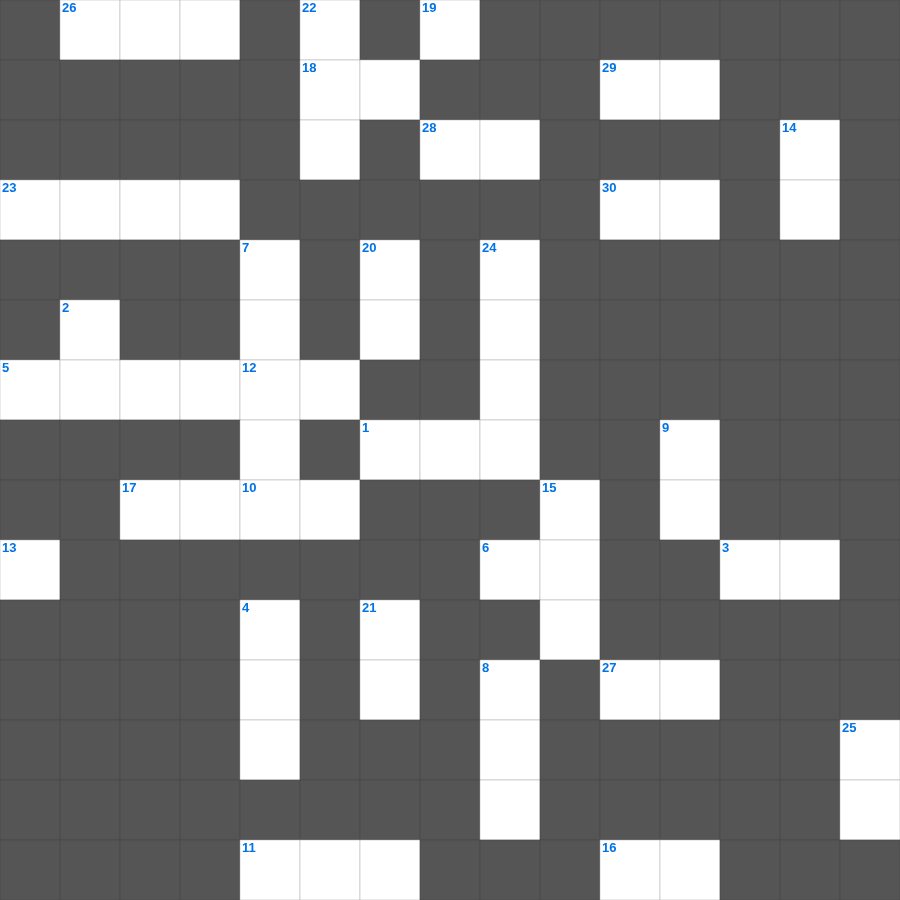

아가 마스터 100 (1/2)
📌 서비스 정의
십자가로세로는 교회 주보와 주일학교에서 사용할 수 있는 성경 기반 가로세로 퍼즐 서비스입니다. 성경 인물, 사건, 핵심 구절을 바탕으로 제작되었습니다. 온라인 풀이 및 인쇄 기능을 제공합니다.
📖 아가란?
아가는 솔로몬과 술람미 여인의 사랑 노래로, 남녀 간의 아름다운 사랑을 시적으로 묘사하며 전통적으로 하나님과 그 백성, 그리스도와 교회의 사랑을 상징하기도 합니다.
📚 아가의 주요 사건·주제
신랑과 신부의 첫 만남과 사랑의 노래 · 사랑의 그리움과 찾음 · 결혼의 기쁨 · 사랑의 견고함에 대한 찬미 · 사랑의 영원함에 대한 선언
오늘은 아가의 주요 내용을 담은 아가 무료 성경퀴즈를 준비했습니다. 총 35개의 힌트가 있으며, 주일학교 교재나 성경공부 자료로 활용하기 좋습니다. 무료로 즐기는 아가 가로세로 퍼즐을 지금 바로 풀어보세요!

📝 가로 힌트
1. 누가 철학과 헛된 이것으로 너희를 사로잡을까 주의하라 이것은 사람의 전통과 세상의 초등학문을 따름이요
3. 하나님은 그리스도를 죽은 자들 가운데서 다시 살리시고 모든 이것과 권세와 능력과 주권 위에 뛰어나게 하시고
5. 베드로전서 2장 5절: 예수 그리스도로 말미암아 하나님이 기쁘게 받으실 이것을 드릴 거룩한 제사장이 될지니라
6. 그리스도 예수의 사람들은 육체와 함께 그 정욕과 이것을 십자가에 못 박았느니라
10. 바벨론 왕 느부갓네살이 예루살렘을 이것 하고 성벽을 허물었더라
11. 너희는 사랑의 이것으로 서로 문안하라 그리스도 안에 있는 너희 모든 이에게 평강이 있을지어다
12. 베드로전서 4장 8절: 무엇이 허다한 죄를 덮는가
12. 믿음 소망 사랑 중 제일은 이것
16. 베드로후서 3장 9절: 주께서 오래 참으시는 이유: 아무도 이것하지 않기를 원하심
17. 우리가 그 안에서 그를 믿음으로 말미암아 이것과 당당히 하나님께 나아감을 얻느니라
18. 또 어려서부터 이것을 알았나니 성경은 능히 너로 하여금 그리스도 예수 안에 있는 믿음으로 말미암아 구원에 이르는 지혜가 있게 하느니라
18. 데살로니가 사람들이 베레아 사람보다 더 간절히 본 것
19. 모세의 별명 '여호와의 이것'
23. 내가 밤에 침상에서 마음으로 사랑하는 자를 이것 하였노라
26. 우리가 사방으로 우겨쌈을 당하여도 이것되지 아니하며 답답한 일을 당하여도 낙심하지 아니하며
27. 불의한 자가 하나님의 나라를 이것으로 받지 못할 줄을 알지 못하느냐
28. 민간에 거짓 선지자들이 일어났었나니 이와 같이 너희 중에도 거짓 이것들이 있으리라
29. 유다서 1장 16절: 그 이것대로 행하는 자라 (원망하는 자들의 특징)
30. 바울의 주치의이자 누가복음 기록자
📝 세로 힌트
2. 하나님의 이것을 근심하게 하지 말라 그 안에서 너희가 구원의 날까지 인치심을 받았느니라
2. 모든 기도와 간구를 하되 항상 이것 안에서 기도하고 이를 위하여 깨어 구하기를 항상 힘쓰며
4. 그들의 총명이 어두워지고 그들 가운데 있는 무지함과 그들의 마음이 이것함으로 말미암아 하나님의 생명에서 떠나 있도다
5. 전신갑주: 평안의 복음이 준비한 이것 (발)
7. 일만 악의 뿌리
8. 우리 안에 거하시는 성령으로 말미암아 네게 부탁한 아름다운 것을 이것
9. 너는 진리의 말씀을 옳게 분별하며 부끄러울 것이 없는 이것으로 인정된 자로 자신을 하나님 앞에 드리기를 힘쓰라
12. 내가 매를 가지고 너희에게 나아가랴 이것과 온유한 마음으로 나아가랴
13. 소돔과 고모라 성을 멸망하기로 정하여 이것이 되게 하사 후세에 경건하지 아니할 자들에게 본을 삼으셨으며
14. 왕이 유다 왕 여호야긴의 머리를 들어 주었고 죄수의 이것을 벗겨 주었더라
15. 전신갑주: 의의 이것 (가슴)
20. 사람과 짐승에게 붙어 괴롭힌 여섯 번째 재앙
21. 누구든지 주의 이름을 부르는 자는 이것을 받으리라
22. 성령을 우리에게 어떻게 부어 주셨나
24. 반석을 치자 물이 나온 기적
25. 형제들아 내가 지금까지 할례를 전한다면 어찌하여 지금까지 이것을 받으리요
🧩 이 퍼즐에서 배우는 내용
이 퍼즐은 아가 마스터 100 (1/2)의 핵심 단어와 개념을 자연스럽게 복습할 수 있도록 구성되었습니다. 주일학교 수업이나 개인 성경공부에서 학습 내용을 점검하는 용도로 바로 활용할 수 있습니다.
🧑🏫 교회 교육 자료 활용
이 퍼즐은 주일학교 교재 추천 자료로 활용할 수 있고, 주일학교 주보에 넣기 좋은 분량으로 구성되어 있습니다. 수업용 주일학교 교안에 활동지로 붙이거나, 예배 후 복습용 주일학교 공과교재로 바로 사용할 수 있습니다.
🏷️ 키워드
아가 무료 성경퀴즈, 아가, 십자가로세로, 성경퀴즈, 말씀퀴즈, 가로세로퍼즐, 주일학교 교재 추천, 주일학교 주보, 주일학교 교안, 주일학교 공과교재